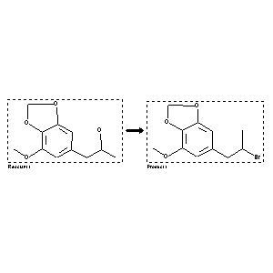

|  |
| FA | RX(1); FLST(1); RX(1) |
Reaction (1 of 1)
| Reaction ID | 3677252 |
| Reactant BRN | 6805651 |
| Reactant | 1-(7-methoxy-benzo[1,3]dioxol-5-yl)-propan-2-ol |
| Product BRN | 6805654 |
| Product | 6-(2-bromo-propyl)-4-methoxy-benzo[1,3]dioxole |
| No. of Reaction Details | 1 |
Reaction Details (1 of 1)
| Reaction Classification | Preparation |
| Yield | 83 percent (BRN=6805654) |
| Reagent | PBr3, DMF |
| Solvent | diethyl ether |
| Time | 7 hour(s) |
| Temperature | 50 |
| Citation Pointer | 5900166; Journal; Takeya, Tetsuya; Ohguchi, Akira; Ara, Yoshiaki; Tobinaga, Seisho; CPBTAL; Chem.Pharm.Bull.; EN; 42; 3; 1994; 430-437; |
Reference (1 of 1)
| Citation Number | 5900166 |
| Document Type | Journal |
| Authors | Takeya, Tetsuya; Ohguchi, Akira; Ara, Yoshiaki; Tobinaga, Seisho |
| CODEN | CPBTAL |
| Journal Title | Chem.Pharm.Bull. |
| Language Code | EN |
| (Series) Volume | 42 |
| Number | 3 |
| Publication Year | 1994 |
| Page | 430-437 |